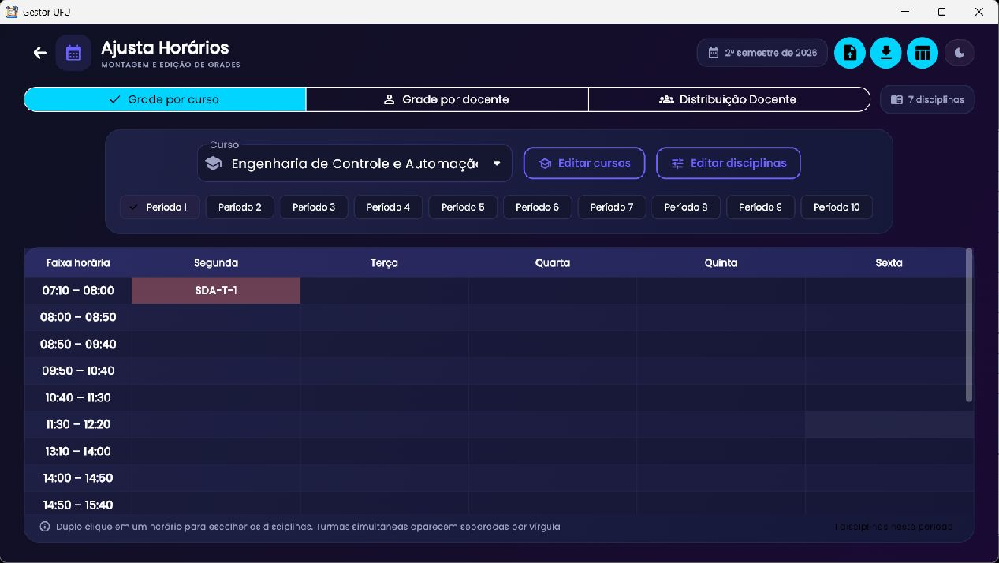
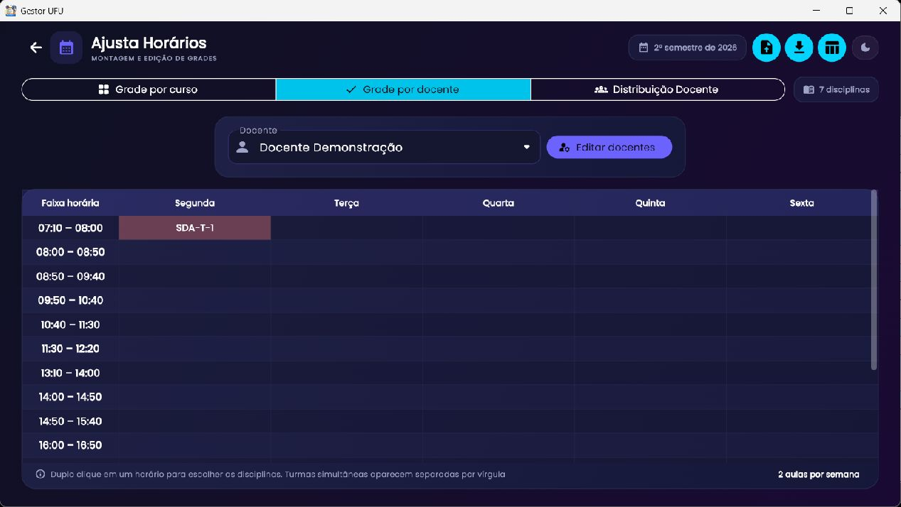
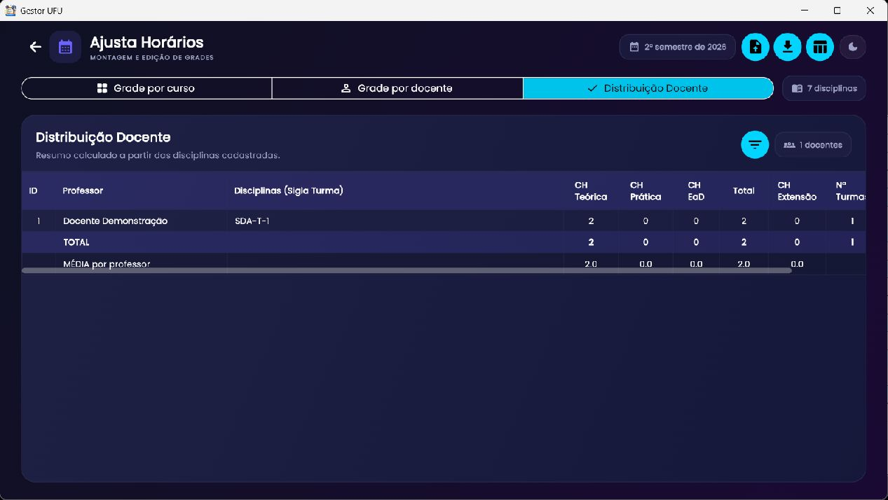

Planejamento de disciplinas
Ajusta Horários
Cadastre cursos, períodos letivos, docentes, disciplinas e turmas; monte as grades por curso ou professor e consulte a distribuição de carga horária.
CH significa carga horária. Uma disciplina contém modalidades e turmas próprias. Turmas podem ter docentes múltiplos; cada turma tem identificação, sala e horários. As cargas horárias são cadastradas na disciplina por modalidade e precisam corresponder às turmas. EaD pode existir sem horário presencial; Extensão pode ou não ocupar a grade. O período letivo guarda um conjunto independente de cursos, disciplinas e docentes.

Períodos letivos
O cabeçalho mostra o período em uso. Abra o seletor para trocar de período, criar um nome novo (por exemplo, “1º semestre de 2027”) ou selecionar outro como ativo. Ao criar, escolha começar em branco ou copiar de outro período. Uma cópia inicial não mantém vínculo: depois da criação, cadastros, alterações, cursos e docentes são independentes. Revise os dados copiados antes de editar.
Cursos e períodos do curso
Na aba Grade por curso, escolha curso pela lista ou digite para filtrar. Editar cursos permite adicionar ou remover cursos. Os botões Período 1–10 e Optativas selecionam a grade a visualizar. Use Editar disciplinas para abrir a lista do período; nela é possível localizar, editar, adicionar e remover disciplinas. O editor detalhado permite escolher uma disciplina existente pelo nome/sigla ou criar nova, alterar código, sigla, nome e registrar modalidade, CH, turma, sala, docentes e horários. Remover uma disciplina exige confirmação.
Docentes e associação
Na aba Grade por docente, filtre/seleciona docente para ver sua semana. Editar docentes permite criar, renomear/editar ou remover docentes cadastrados no período. O cadastro de docente é independente entre períodos letivos.

Na grade, faça duplo clique em célula/horário para escolher ou desmarcar uma ou mais disciplinas/turmas. A seleção é persistida na base do período e aparece também na outra visualização. Confirme o período e o docente antes de editar. Use rolagem vertical para horários e horizontal quando a janela não couber a tabela inteira.
Distribuição Docente

A aba consolida uma linha por docente com ID, professor, disciplinas (sigla e turma), CH Teórica, CH Prática, CH EaD, Total, CH Extensão, número de turmas e períodos cadastrados. CH de extensão não entra no total; CH EaD entra. Os rodapés TOTAL e MÉDIA resumem a lista filtrada. O ícone de filtro abre a seleção persistente de docentes visíveis. Clique na célula de disciplinas para associar/desassociar disciplinas daquele professor; use o seletor de “todas” ou “selecionadas” para reduzir a lista. Revisar essa coluna e os totais ajuda a encontrar atribuições incorretas.
Turmas, modalidades e carga horária
Na edição de disciplina:
- Cadastre CH Teórica, Prática, EaD e Extensão na disciplina; os valores são compartilhados entre as turmas daquela modalidade.
- A lista de modalidade só oferece modalidades com CH maior que zero. EaD não exige turma presencial.
- Teórica, Prática e Extensão podem ter várias turmas, cada qual com identificador, sala, docente(s) e blocos próprios.
- Use os botões +/− junto da turma para incluir/remover uma turma. A remoção da última turma pode exibir confirmação porque exclui também horários associados.
- Marque os horários semanais (segunda a sexta) da turma. Cada marca representa um bloco na grade.
- A cor da turma informa a carga cadastrada: verde indica carga atendida; amarelo indica carga excedente; vermelho indica carga faltante. Extensão é tratada como verde conforme a regra atual. EaD não ocupa horário presencial.
Quando a turma não tem identificação, clique na lista de turma e digite-a. O nome/sigla da disciplina também reflete o estado das turmas: vermelho se alguma estiver vermelha; senão amarelo se alguma estiver amarela; caso contrário verde. Os rótulos de grade usam a forma sigla-modalidade-turma (por exemplo, EXPG-P-A1).
Grade, cores e colisões
As cores distintas ajudam a separar disciplinas na mesma grade. Se uma célula reúne turmas simultâneas, o rótulo lista cada item, e a cor é repartida entre os segmentos associados. Verifique as bordas da célula em situações de vários itens e compare com as turmas cadastradas. Cor não substitui a conferência de código, modalidade e turma.
Importar e exportar
No cabeçalho, Importar base da planilha carrega dados de arquivo compatível e Exportar grade em PDF/Exportar grade em CSV permitem guardar ou compartilhar a grade. Para PDF, escolha os períodos pedidos; o sistema gera uma página por período e inclui cores e legenda de disciplina/turma e docente. CSV exporta dados tabulares; confira codificação e separador ao abrir em outra ferramenta.
- Escolha o período letivo correto antes de importar.
- Faça cópia de segurança da base/arquivo atual.
- Importe a planilha e confira quantidade de cursos, docentes e disciplinas.
- Abra as três abas e valide horários, modalidades e cargas antes de exportar.
- Escolha os períodos e revise o PDF/CSV criado.
Problemas comuns
| Problema | Diagnóstico |
|---|---|
| Docente ou disciplina não aparece | Confira período ativo, filtro persistente e texto digitado. Cada período possui cadastros independentes. |
| Turma faltando/aviso de CH | Verifique CH da modalidade, quantidade de turmas e número de blocos marcados. EaD pode não ter turma física. |
| Grade parece vazia | Confira curso/docente selecionado, período/optativas e filtros; desloque rolagem até a grade. |
| Colunas cortadas | Desloque a barra horizontal inferior da tabela ou amplie a janela. |
| Duplicidade ou disciplina órfã | Abra Editar disciplinas, compare código/nome/turma e remova cadastro apenas após verificar a distribuição. |
Relacionado: backup, Planos de Ensino e Preenche Diários.